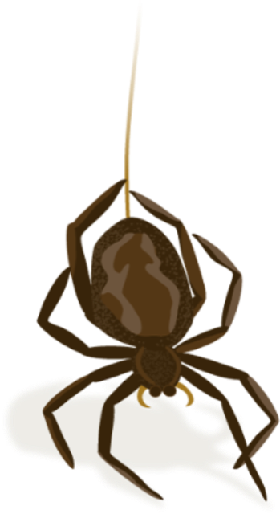
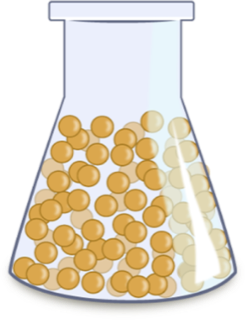
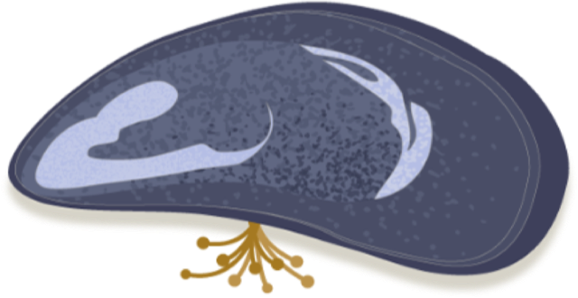
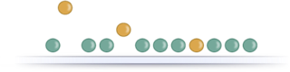
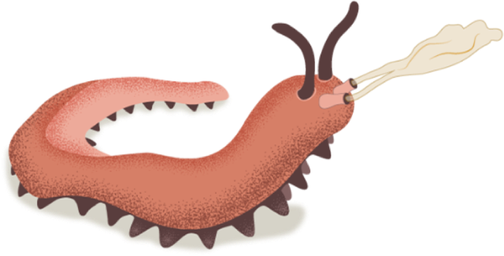
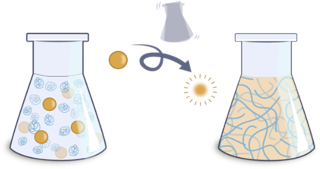

Impossible Fibers
Learning from nature

silk proteins held in micelles

Storage
proteins packaged in secretory vesicles

Storage + sequencing
proteins stored in nanoglobules

Triggered deliveryIllustrations © Gretchen Hooker / Pixel Naturalist · Read the story: Humanity Makes Noodles. Nature Makes Machines. ↗
Open science platform